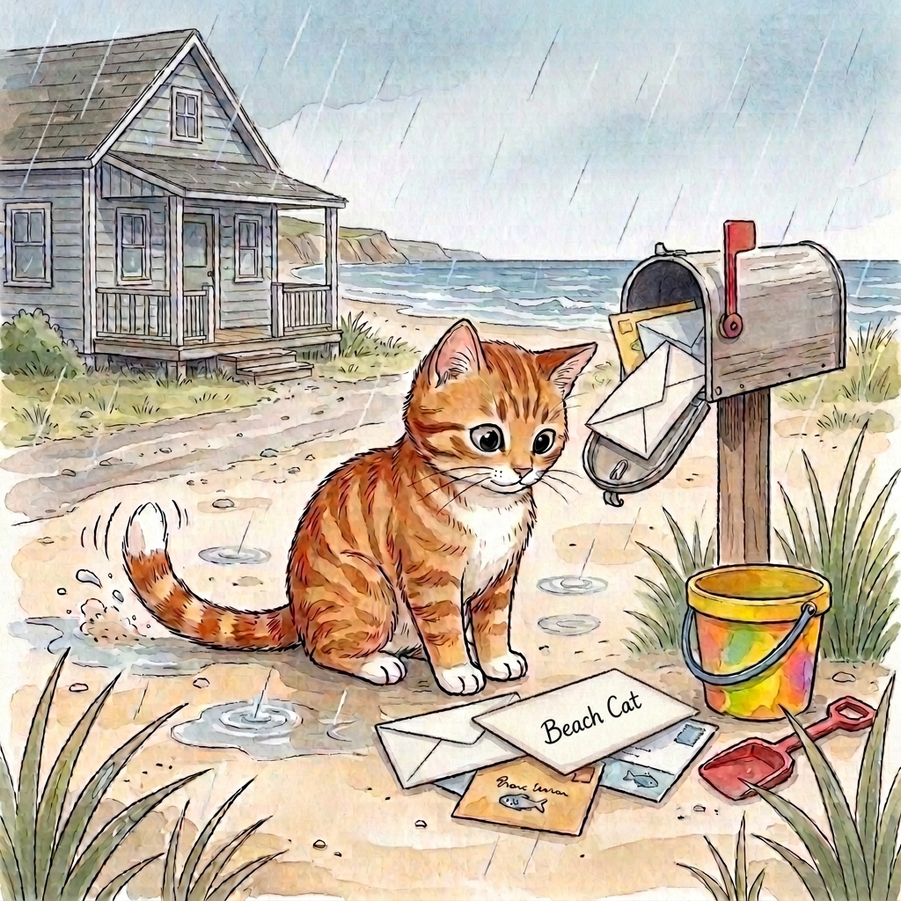

Step 1 · Say the Sound
ai
ai can say long a, like mail.
mail
tail
rain
Read one gentle story with ai. The letters ai can say long a, like in mail.

ai can say long a, like mail.
Rain taps the sand.
Beach Cat sees mail.
The mail is by a pail.
Beach Cat taps his tail.
He will wait.
The mail is safe.
Now you read more words with ai.
That’s a win.
If it still feels fun, read the story again.